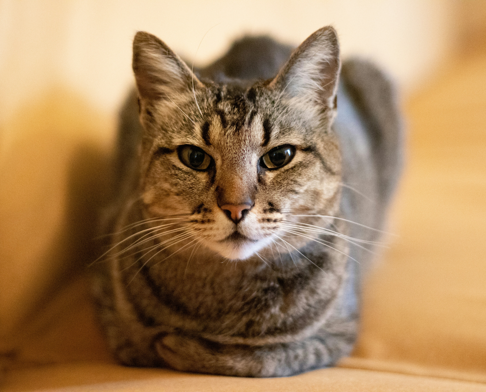
À adopter
Pistache
Chatte · 2 ans
S'entend avec les chats, les enfants. Pas avec les chiens.
Découvrir sa ficheVoici les chiens et les chats qui attendent une famille. Venez les rencontrer aux heures de visite !
Liste mise à jour le 12 août 2026.

Chatte · 2 ans
S'entend avec les chats, les enfants. Pas avec les chiens.
Découvrir sa fiche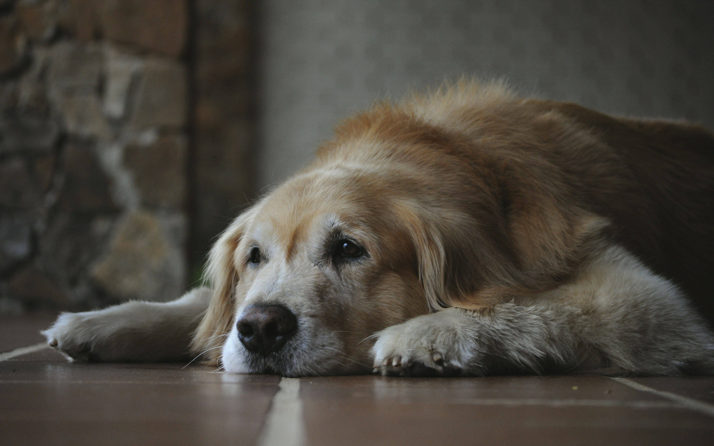
Chien · 9 ans · gabarit moyen
S'entend avec les chiens, les enfants. Pas avec les chats.
Découvrir sa fiche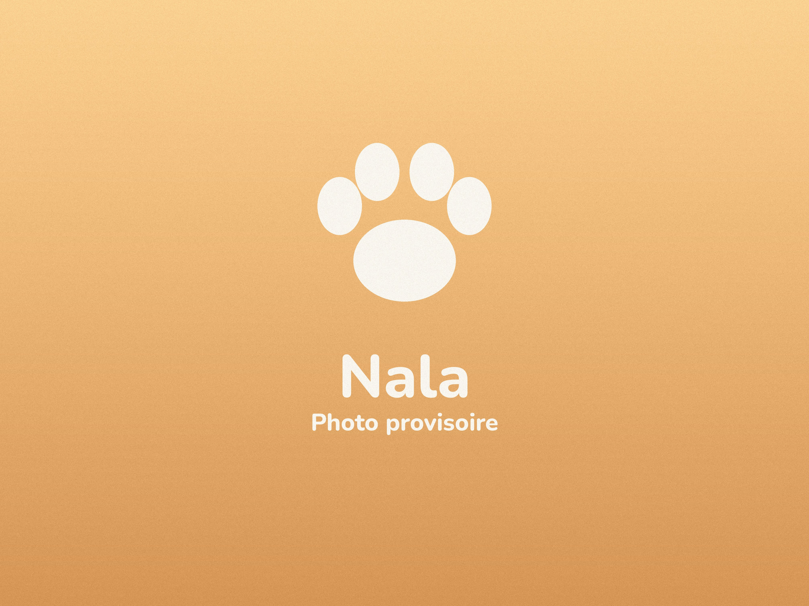
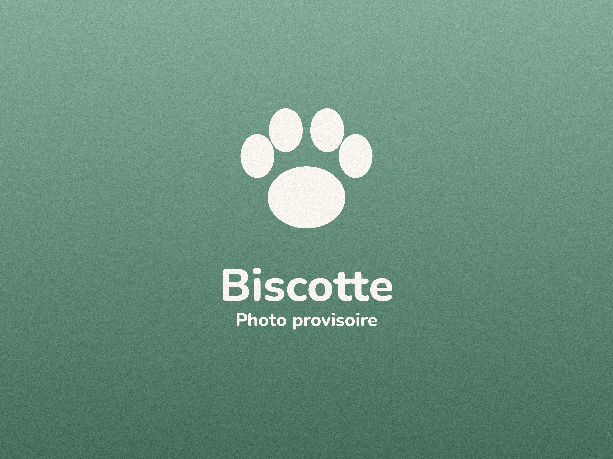
Chienne · 3 ans · petit gabarit
S'entend avec les chats, les chiens. Pas avec les enfants.
Découvrir sa fiche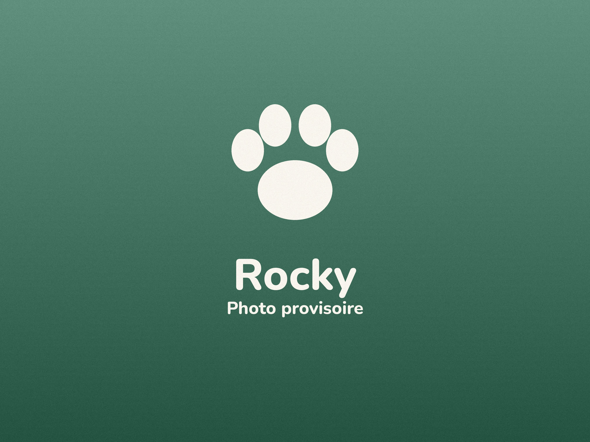
Chien · 5 ans · grand gabarit
Pas avec les chats, les chiens, les enfants.
Découvrir sa fiche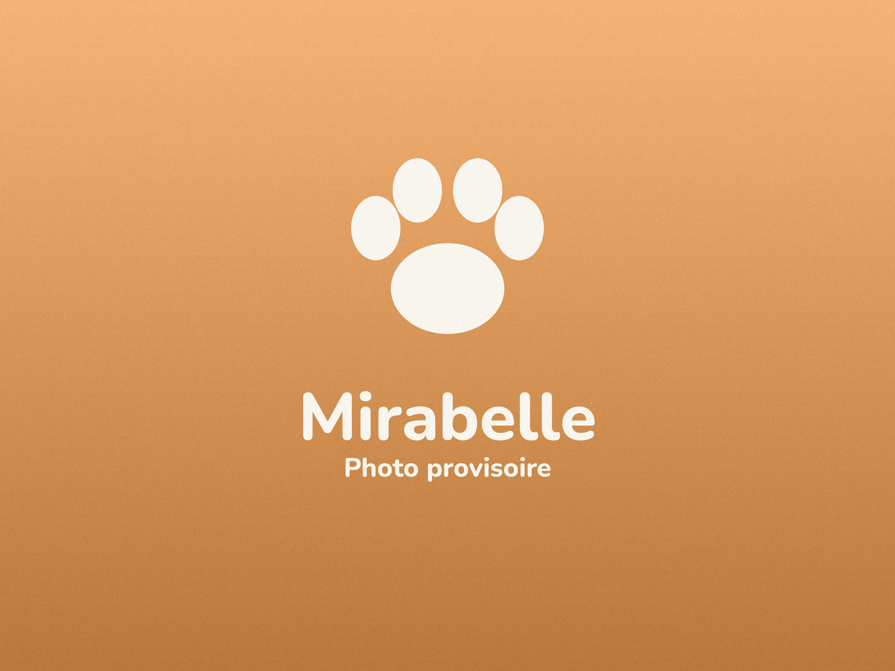
Chatte · 11 ans
S'entend avec les enfants. Pas avec les chats, les chiens.
Découvrir sa fiche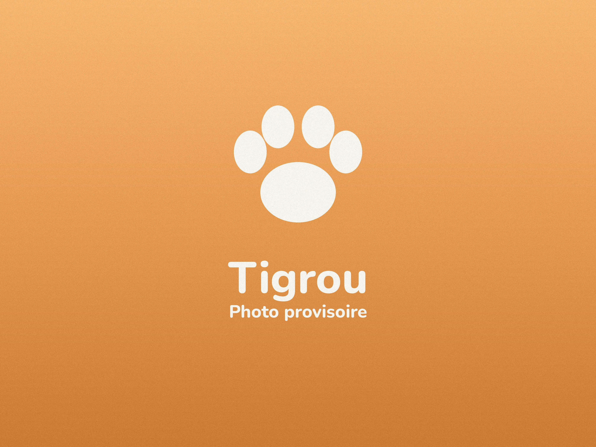
Chat · 4 ans
S'entend avec les chats, les enfants. Pas avec les chiens.
Découvrir sa fiche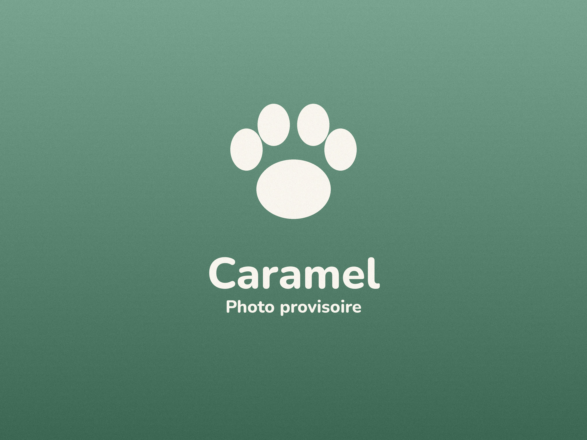
Chien · 1 an · gabarit moyen
S'entend avec les chats, les chiens, les enfants.
Découvrir sa fiche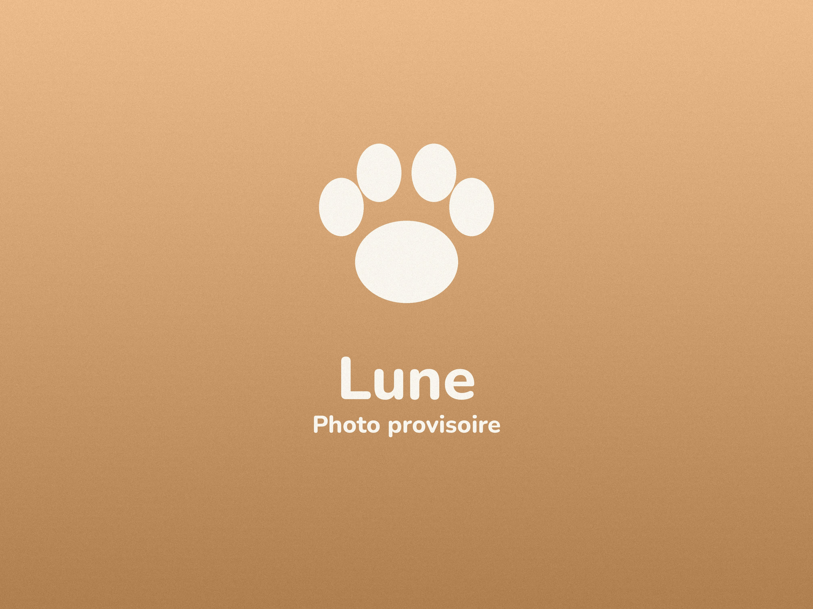
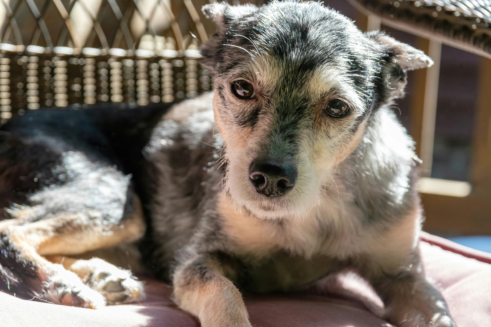
Chien · 12 ans · petit gabarit
S'entend avec les chats, les chiens, les enfants.
Découvrir sa fiche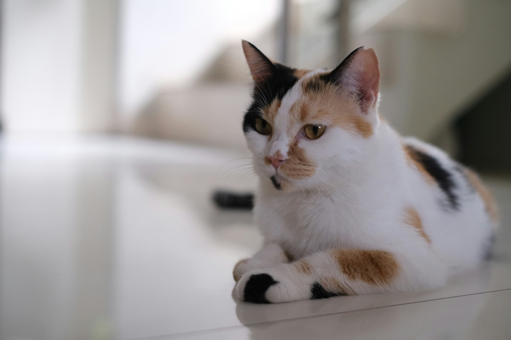
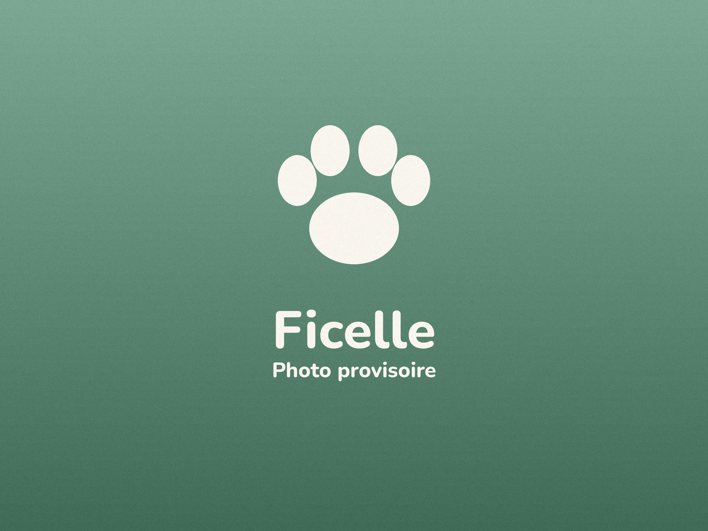
Chienne · 7 ans · gabarit moyen
S'entend avec les chiens, les enfants. Pas avec les chats.
Découvrir sa fiche